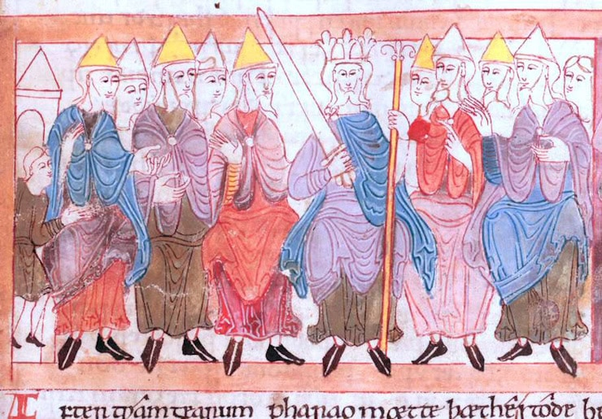
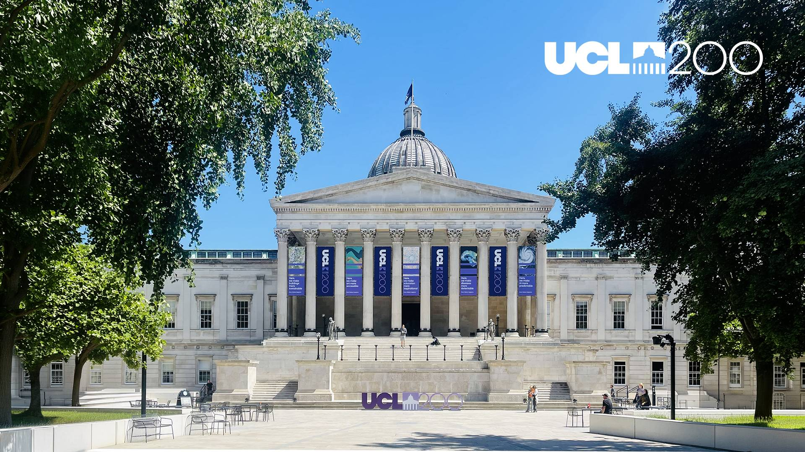

The name
Witan is a word from Old English meaning “the wise.” The witan was a council convened to advise the king (or queen) on matters of consequence in Anglo-Saxon England between the seventh and eleventh centuries. It served as the king’s council in the governance of the realm and carried the prominent task of electing the king from the candidates presented to it.

The last Witan in Oxford was held 961 years ago. It turned out to be consequential: the autumn 1065 witan set in motion the power struggle that laid the groundwork for the Norman invasion of 1066. This one, we hope, will not.
Origins
The Strategy Witan continues a tradition established at London Business School in 2019 with the “London 50” conference, organised by Freek Vermeulen. Covid interrupted the series. In 2026, Oxford’s Saïd Business School revived it under the Witan name. The intention from the outset was for the conference to rotate hosts across the UK strategy community.
Format
The Witan is deliberately unlike a normal academic conference. It is not a venue for presenting one’s latest paper. It is a discussion forum with an emphasis on the questions the field ought to be taking seriously — and on what, if anything, our scholarship can do about them.
The invitation-only format is a function of space, not exclusion for its own sake. The blog exists so that the substantive output of each Witan is available to the wider community.
The 2027 host
The 2027 edition is hosted by the UCL School of Management, part of University College London — founded in 1826 as a secular alternative to Oxford and Cambridge, and marking its bicentenary in 2026. The School of Management occupies Levels 38 and 48–50 of One Canada Square in Canary Wharf, London, with Levels 46 and 47 due to open.

Hosting rotation
- 2019London Business SchoolFreek Vermeulen
- 2026Saïd Business School, OxfordMichelle Rogan, Richard Whittington & Eric Zhao
- 2027UCL School of ManagementAnil Doshi & Tom Kwon
- 2028Bayes Business SchoolSanti Furnari, Gianvito Lanzolla & Elena Novelli
Institutions interested in hosting a future Witan are welcome to get in touch.